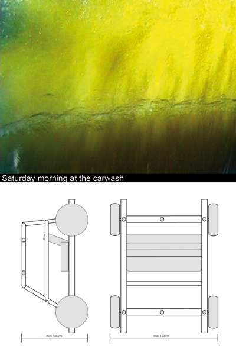

BARKING DOGS UNITED
----------------------------------------------------------------------------------------------------------------------------
NEWS ABOUT PROJECTS TEXT LINKS CONTACT
| Artist
Duo BARKING DOGS UNITED ---------------------------------------------------------------------------------------------------------------------------- NEWS ABOUT PROJECTS TEXT LINKS CONTACT |
| Please
select a project: 2008 What We Is Want What You Want SIZE MATTERZ 2007 Bis Auf Weiteres... 2006 On A Spaceship With No Fuel And No Future Carwash iForgive / iForget 2005 The Wild Bunch |
"Carwash" Intervention in public space, Weimar, Germany, 2006. A project by Barking Dogs United (Nikos Arvanitis, Naomi Tereza Salmon).  We are Barking Dogs United. We do many things together like cook, watch films, listen to music, dance, check e-mails, talk on the phone, draw, make photos, videos, installations and music. We drink mainly beer and like to party and work for a future in which there will be no more artists, only non-artists. The Carwash. We wanted to go through the carwash without a real car, but we needed some vehicle to get us through and were planning to build one ourselves. And then we wanted go through, just like everybody else does on Saturday morning, and get ourselves clean The lease holder who runs the carwash found the idea funny and said yes, his direct boss gave us his approval as well, we even found an insurance company who agreed to insure us. Everything was ready, We collected 4 wheels, some fancy front seats and wetsuits, but at the last moment the head of the company said no and now we only have a documentation of the process, in form of correspondence and a short film. All content copyright 2006 Nikos Arvanitis + Naomi Tereza Salmon - all rights reserved |